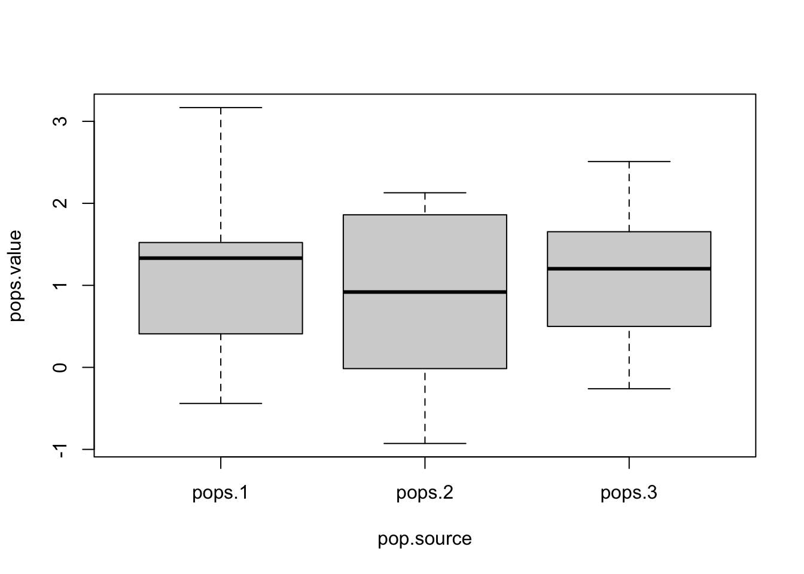

n1 <- 10
n2 <- 10
n3 <- 10
pops.1 <- rnorm(n=n1, mean=1, sd=1)
pops.2 <- rnorm(n=n2, mean=0.9, sd=1)
pops.3 <- rnorm(n=n3, mean=1.1, sd=1)(Pertemuan 09) ANOVA dan Uji Chi-Squared
ANOVA and Chi-Squared Test
Offline di Departemen Matematika
ANOVA
Analysis of Variance (ANOVA) digunakan untuk melakukan uji hipotesis terhadap lebih dari dua populasi. Beberapa asumsi dalam anova adalah:
- Sampel acak saling bebas/independen
- Populasi berdistribusi normal
- Populasi memiliki variansi seragam
Ukuran Sampel Seragam
Misalkan populasi 1 berdistribusi \(N(\mu=1,\sigma^2=1)\), populasi 2 berdistribusi \(N(\mu = 0.9, \sigma^2 = 1)\), dan populasi 3 berdistrbusi \(N(\mu = 1.1, \sigma^2 = 1)\).
Dilakukan pengambilan sampel acak dari ketiga populasi tersebut berukuran 10.
Selanjutnya, akan dibuat dataframe dari sampel acak tersebut. Kolom pop.source menyatakan asal populasi (1,2,3) dan kolom pops.value menyatakan nilai sampel acak.
pop.source <- c(replicate(n1, "pops.1"),
replicate(n2, "pops.2"),
replicate(n3, "pops.3"))
pops.value <- c(pops.1, pops.2, pops.3)
data <- data.frame(pop.source, pops.value)Sebagai analisis pendahuluan, mari kita perhatikan mean, standar deviasi, dan boxplot dari sampel acak masing-masing populasi.
aggregate(pops.value~pop.source, data=data,
function(x) c(mean = mean(x),sd = sd(x))) pop.source pops.value.mean pops.value.sd
1 pops.1 1.2715493 1.0205656
2 pops.2 0.8571195 1.0278924
3 pops.3 1.1507674 0.8342135boxplot(pops.value~pop.source, data=data)
Berdasarkan intuisi pengamatan terhadap sampel acak, kita dapat menebak bahwa mean ketiga populasi tersebut tidaklah berbeda signifikan secara statistik.
Untuk memverifikasi, kita akan melakukan uji ANOVA satu arah. Dengan tingkat signifikansi \(\alpha=0.05\), hipotesis dari uji ini adalah:
- \(H_0: \mu_1 = \mu_2 = \mu_3\)
- \(H_1:\) setidaknya salah satu dari \(\mu_1,\mu_2,\mu_3\) berbeda nilainya
Untuk menjalankan uji ANOVA satu arah, digunakan fungsi oneway.test()
oneway.test(pops.value ~ pop.source,
data = data,
var.equal = TRUE)
One-way analysis of means
data: pops.value and pop.source
F = 0.48777, num df = 2, denom df = 27, p-value = 0.6193Fungsi lain yang dapat digunakan adalah aov()
av <- aov(pops.value ~ pop.source, data = data)
summary(av) Df Sum Sq Mean Sq F value Pr(>F)
pop.source 2 0.909 0.4543 0.488 0.619
Residuals 27 25.146 0.9313 Ingat lagi bahwa daerah kritis uji ANOVA adalah:
- \(F_\text{hitung}< F_{\alpha;(k-1);k(n-1)}\)
- p-value < \(\alpha\).
Dengan \(k\) adalah banyak populasi dan \(n\) adalah ukuran sampel acak dalam satu populasi.
Kita bisa mendapatkan nilai F tabel.
alpha = 0.05
F_tabel = qf(p=1-alpha, df1 = 3-1, df2 = 3*(10-1))
F_tabel[1] 3.354131Didapatkan \[F_\text{hitung} = 0.18194 < 3.354131 = F_\text{tabel}\] dan p-value = 0.8347 > 0.05 = \(\alpha\). Maka hasil uji berada di luar daerah kritis. Dengan kata lain, tidak terdapat bukti yang cukup untuk menolak \(H_0\) di mana tidak ada perbedaan yang signifikan secara statistik antara nilai \(\mu_1, \mu_2, \mu_3\)
Ukuran Sampel Tidak Seragam
Untuk kasus pengambilan sampel acak dari ketiga populasi dengan ukuran tidak seragam, kita hanya perlu mengubah nilai \(n_1, n_2, n_3\).
n1 <- 9
n2 <- 15
n3 <- 10
pops.1 <- rnorm(n=n1, mean=1, sd=1)
pops.2 <- rnorm(n=n2, mean=0.9, sd=1)
pops.3 <- rnorm(n=n3, mean=1.1, sd=1)
pop.source <- c(replicate(n1, "pops.1"),
replicate(n2, "pops.2"),
replicate(n3, "pops.3"))
pops.value <- c(pops.1, pops.2, pops.3)
data <- data.frame(pop.source, pops.value)Kita akan melakukan uji ANOVA satu arah dengan fungsi yang sama seperti sebelumnya.
oneway.test(pops.value ~ pop.source,
data = data,
var.equal = TRUE)
One-way analysis of means
data: pops.value and pop.source
F = 0.12086, num df = 2, denom df = 31, p-value = 0.8866av <- aov(pops.value ~ pop.source, data = data)
summary(av) Df Sum Sq Mean Sq F value Pr(>F)
pop.source 2 0.157 0.0786 0.121 0.887
Residuals 31 20.152 0.6501 Ingat lagi bahwa daerah kritis uji ANOVA adalah:
- \(F_\text{hitung}< F_{\alpha;(k-1);k(n-1)}\)
- p-value < \(\alpha\).
dengan \[N = \sum_1^kn_i\]
Maka kita dapat F tabel.
F_tabel = qf(p=1-alpha, df1 = 3-1, df2 = n1+n2+n3 - 3)
F_tabel[1] 3.304817Didapatkan \[F_\text{hitung} = 1.3941 < 3.304817 = F_\text{tabel}\] dan p-value = 0.2632 > 0.05 = \(\alpha\). Maka hasil uji berada di luar daerah kritis. Dengan kata lain, tidak terdapat bukti yang cukup untuk menolak \(H_0\) di mana tidak ada perbedaan yang signifikan secara statistik antara nilai \(\mu_1, \mu_2, \mu_3\)
Uji Chi Squared
Uji Chi Squared (Khi Kuadrat) dibagi menjadi dua jenis, yaitu uji kecocokan model (goodness of fit) dan uji independensi.
Uji Goodness of Fit
Uji ini digunakan untuk mengetahui apakah suatu data memiliki distribusi probabilitas tertentu yang sudah kita duga sebelumnya.
Menggunakan built-in function
Misalkan kita mempunyai data sampel acak berukuran 6 (lihat variabel “obs” dibawah).
Sampel acak tersebut berasal dari suatu populasi dengan ruang nilai diskrit. Dapatkah kita menyimpulkan bahwa populasi tersebut berdistribusi uniform?
obs <- c(20,22,17,18,19,24)
prob = c(replicate(length(obs),1))/length(obs)Untuk menguji hipotesis tersebut, kita bisa menggunakan uji chi-squared. Hipotesis yang digunakan adalah:
- \(H_0:\) populasi berdistribusi uniform
- \(H_1:\) populasi tidak berdistribusi uniform
Dengan tingkat signfikasi \(\alpha=0.05\), daerah kritis diberikan oleh - \(\chi^2_\text{hitung} > \chi^2_{\alpha, k-1}\) - p-value < \(\alpha\).
Uji chi-squared dapat dilakukan dengan fungsi chisq.test()
chisq.test(obs, p = prob)
Chi-squared test for given probabilities
data: obs
X-squared = 1.7, df = 5, p-value = 0.8889dan \(\chi^2_{\alpha, k-1}\)
qchisq(p=1-alpha, df=15-1)[1] 23.68479Karena \(\chi^2_\text{hitung} = 1.7 < 23.68479 = \chi^2_{\alpha, k-1}\) dan p-value = 0.8889 > \(0.05 = \alpha\), maka hasil uji berada di luar daerah kritis. Dengan kata lain, tidak terdapat bukti yang cukup untuk menolak \(H_0\) di mana populasi berdistribusi uniform.
Menggunakan statistik uji
Misal kita ingin menguji apakah sebuah dadu seimbang dengan pengambilan sampel acak berukuran 120 pelemparan.
n_dadu <- 120
dadu <- ceiling(runif(n=n_dadu, min = 0, max=6))
dadu [1] 5 1 4 2 5 1 2 5 5 1 6 5 1 4 3 2 5 1 6 1 3 1 6 2 5 5 6 2 3 1 1 3 2 4 4 1 2
[38] 2 5 5 3 3 2 6 1 2 4 5 4 3 5 1 1 1 1 3 3 1 1 6 1 3 3 6 1 4 3 4 1 1 2 3 1 3
[75] 2 3 1 5 5 5 4 1 4 4 3 1 4 1 2 3 1 6 2 3 3 5 4 5 4 2 5 6 5 4 2 3 4 4 1 1 4
[112] 6 2 1 1 1 5 2 1 3Dengan cara yang sama, kita dapat melakukan uji chi-squared
prob = c(replicate(length(dadu),1))/length(dadu)
chisq.test(dadu, p = prob)Warning in chisq.test(dadu, p = prob): Chi-squared approximation may be
incorrect
Chi-squared test for given probabilities
data: dadu
X-squared = 111.38, df = 119, p-value = 0.6776Terdapat pesan “Warning: Chi-squared approximation may be incorrect”. Hal ini terjadi karena terdapat beberapa pengulangan nilai pada ruang sampel, di mana masing-masing nilai tersebut dianggap sebagai observasi independen yang memiliki probabilitas \(\frac{1}{120}\). Sedangkan, kita ingin menguji apakah peluang masing-masing mata dadu muncul bernilai \(\frac{1}{6}\).
x <- table(dadu)
xdadu
1 2 3 4 5 6
33 18 21 18 20 10 Maka, kita dapat melakukan uji chi-squared tanpa menggunakan fungsi chisq.test()
Karena kita ingin menguji apakah dadu seimbang, kita akan membandingkan nilai “observasi” kemunculan mata dadu dengan nilai “ekspektasi” kemunculan mata dadu jika dadu seimbang.
val.dadu <- names(x)
obs.dadu <- as.vector(x)
ex.dadu <- c(replicate(6, n_dadu/6))
rbind(val.dadu, obs.dadu, ex.dadu) [,1] [,2] [,3] [,4] [,5] [,6]
val.dadu "1" "2" "3" "4" "5" "6"
obs.dadu "33" "18" "21" "18" "20" "10"
ex.dadu "20" "20" "20" "20" "20" "20"Ingat hipotesis yang digunakan adalah
- \(H_0:\) dadu seimbang, hasil pelemparan dadu berdistribusi uniform
- \(H_1:\) hasil pelemparan dadu tidak berdistribusi uniform
Statistik uji yang digunakan adalah \[\chi^2 = \sum_i^k \frac{(o_i-e_i)^2}{e_i}\]
Didapat \(\chi^2_\text{hitung}\)
chi.hitung <- sum((obs.dadu-ex.dadu)**2/ex.dadu)
chi.hitung[1] 13.9dan \(\chi^2_{\alpha, k-1}\)
qchisq(p=1-alpha, df=6-1)[1] 11.0705Karena \(\chi^2_\text{hitung} = 2.8 < 11.0705 = \chi^2_{\alpha, k-1}\), maka hasil uji berada di luar daerah kritis. Dengan kata lain, tidak terdapat bukti yang cukup untuk menolak \(H_0\) di mana dadu seimbang.
Membandingkan dengan distribusi non-uniform
Misalkan kita memiliki populasi dengan ruang nilai kontinu [1.45, 4.95], dan dilakukan pengambilan sampel acak berukuran 40 yang dibagi ke dalam 7 kelas
lower_bound <- c()
for (i in 1:7) {lower_bound[i] <- 1.45+(i-1)*0.5}
upper_bound <- c()
for (i in 1:7) {upper_bound[i] <- 1.95+(i-1)*0.5}
obs_class <- c(2,1,4,15,10,5,3)
data.frame(lower_bound, upper_bound, obs_class) lower_bound upper_bound obs_class
1 1.45 1.95 2
2 1.95 2.45 1
3 2.45 2.95 4
4 2.95 3.45 15
5 3.45 3.95 10
6 3.95 4.45 5
7 4.45 4.95 3Dapatkah kita menyimpulkan bahwa populasi asal sampel acak tersebut berdistribusi \(N(\mu=3.5, \sigma^2 = 0.7^2)\)
Kita dapat mulai dengan membuat kolom nilai ekspektasi masing-masing kelas jika populasi berdistribusi \(N(\mu=3.5, \sigma^2 = 0.7^2)\)
mu = 3.5
s = 0.7
prob_class <- c()
for (i in 1:7) {prob_class[i] <-
pnorm(q=upper_bound[i], mean=mu, sd=s) -
pnorm(q=lower_bound[i], mean=mu, sd=s)}
prob_class[1] 0.01170195 0.05340264 0.14921024 0.25551089 0.26831326 0.17279049 0.06820853ex_class <- prob_class*sum(obs_class)
ex_class[1] 0.4680779 2.1361054 5.9684098 10.2204356 10.7325306 6.9116195 2.7283412class <- data.frame(lower_bound, upper_bound, obs_class,ex_class)
class lower_bound upper_bound obs_class ex_class
1 1.45 1.95 2 0.4680779
2 1.95 2.45 1 2.1361054
3 2.45 2.95 4 5.9684098
4 2.95 3.45 15 10.2204356
5 3.45 3.95 10 10.7325306
6 3.95 4.45 5 6.9116195
7 4.45 4.95 3 2.7283412Perhatikan bahwa terdapat beberapa baris dengan nilai ekspektasi yang cukup kecil (<5). Maka, untuk melakukan uji chi-squared yang lebih akurat, akan dilakukan penggabungan kelas-kelas berhimpit tersebut.
i <- 1
while (i < nrow(class)){
while (class[[4]][[i]]<5){
class[[4]][[i]] <- class[[4]][[i]] + class[[4]][[i+1]]
class[[3]][[i]] <- class[[3]][[i]] + class[[3]][[i+1]]
class[[2]][[i]] <- class[[2]][[i+1]]
class[[1]][[i]] <- class[[1]][[i+1]]
class <- class[-c(i+1), ]
}
i <- i+1
}if (class[[4]][[nrow(class)]]<5){
class[[4]][[nrow(class)-1]] <- class[[4]][[nrow(class)]] + class[[4]][[nrow(class)-1]]
class[[3]][[nrow(class)-1]] <- class[[3]][[nrow(class)]] + class[[3]][[nrow(class)-1]]
class[[2]][[nrow(class)-1]] <- class[[2]][[nrow(class)-1]]
class[[1]][[nrow(class)-1]] <- class[[1]][[nrow(class)-1]]
class <- class[-c(nrow(class)), ]
}
class lower_bound upper_bound obs_class ex_class
1 2.45 2.95 7 8.572593
4 2.95 3.45 15 10.220436
5 3.45 3.95 10 10.732531
6 3.95 4.45 8 9.639961Telah didapat data nilai observasi dan nilai ekspektasi yang diperbaiki.
Sebagai intuisi awal, kita bisa memperhatikan barplot dari nilai observasi sampel acak dibandingkan dengan nilai ekspektasinya.
par(mfrow = c(1,2))
barplot(class$obs_class)
barplot(class$ex_class)
Selanjutnya, kita bisa melakukan uji chi-squared terhadap masing-masing kelas observasi dengan metode yang sama. Hipotesis uji adalah
- \(H_0:\) populasi berdistribusi \(N(\mu=3.5, \sigma^2 = 0.7^2)\)
- \(H_1:\) populasi tidak berdistribusi \(N(\mu=3.5, \sigma^2 = 0.7^2)\)
chi_hitung <- sum((class$obs_class-class$ex_class)**2/class$ex_class)
chi_hitung[1] 2.852626qchisq(p=1-alpha, df=7-1)[1] 12.59159Karena \(\chi^2_\text{hitung} = 2.852626 < 12.59159 = \chi^2_{\alpha, k-1}\), maka hasil uji berada di luar daerah kritis. Dengan kata lain, tidak terdapat bukti yang cukup untuk menolak \(H_0\) di mana populasi berdistribusi \(N(\mu=3.5, \sigma^2 = 0.7^2)\).
Uji Independensi
Uji Independensi dilakukan untuk mengetahui apakah antarvariabel kategorik saling bebas (independen) atau tidak saling bebas (dependen).
Pertama-tama kita akan mengimport dataset “treatment” dari situs github.
df <- read.csv("https://raw.githubusercontent.com/selva86/datasets/master/treatment.csv")
View(df)Misal kita ingin menguji apakah ada hubungan antara variabel kategorik treatment dengan variabel kategorik improvement.
Kita dapat membuat tabel kontingensi berukuran 2x2 dari variabel kategorik tersebut.
tabel <- table(df$treatment, df$improvement)
tabel
improved not-improved
not-treated 26 29
treated 35 15Ingat hipotesis yang akan diuji adalah:
- \(H_0\): treatment dan improvement tidak saling mempengaruhi (independen)
- \(H_1\): treatment dan improvement saling mempengaruhi (tidak independen)
Dengan tingkat signfikasi \(\alpha=0.05\), daerah kritis diberikan oleh
- \(\chi^2_\text{hitung} > \chi^2_{\alpha, (r-1)(c-1)}\)
- p-value < \(\alpha\).
Kita dapat melakukan uji chi-squared terhadap tabel kontingensi yang telah dibuat.
chisq.test(tabel)
Pearson's Chi-squared test with Yates' continuity correction
data: tabel
X-squared = 4.6626, df = 1, p-value = 0.03083Untuk \(\chi^2_{\alpha, (r-1)(c-1)}\)
qchisq(p=1-alpha, df=(2-1)*(2-1))[1] 3.841459Karena \(\chi^2_\text{hitung} = 4.6626 > 3.841459 = \chi^2_{\alpha, k-1}\), dan p-value = 0.03083 < 0.05= \(\alpha\), maka hasil uji berada di dalam daerah kritis. Dengan kata lain, terdapat bukti yang cukup untuk menolak \(H_0\) di mana treatment dan improvement tidak saling mempengaruhi.
Akan tetapi, kita tidak bisa menyimpulkan bagaimana kedua variabel tersebut saling mempengaruhi. Jadi, kita hanya bisa mengindikasi adanya asosiasi antarvariabel tanpa mengetahui apa/bagaimana asosiasinya (perlu dilakukan uji lain untuk menjelaskan lebih lanjut)
Kasus Khusus
data("mtcars")
View(mtcars)Perhatikan bahwa ruang nilai variabel carb dan cyl adalah bilangan asli, sehingga kita bisa menganggap bahwa kedua variabel tersebut adalah variabel kategorik.
Misal kita ingin menguji apakah ada hubungan antara variabel kategorik carb dengan variabel cyl. Kita bisa mulai dengan membuat tabel kontingensi.
tabel2 <- table(mtcars$carb, mtcars$cyl)
tabel2
4 6 8
1 5 2 0
2 6 0 4
3 0 0 3
4 0 4 6
6 0 1 0
8 0 0 1Dan dengan metode yang sama, kita lakukan uji chi-squared terhadap tabel tersebut
chisq.test(tabel2)Warning in chisq.test(tabel2): Chi-squared approximation may be incorrect
Pearson's Chi-squared test
data: tabel2
X-squared = 24.389, df = 10, p-value = 0.006632Perhatikan muncul pesan “Warning: Chi-squared approximation may be incorrect”. Hal ini terjadi karena terdapat beberapa observasi yang bernilai nol, yang mengakibatkan nilai ekspektasi untuk observasi tersebut bernilai kecil (kurang dari 1).
chisq.test(tabel2)$expectedWarning in chisq.test(tabel2): Chi-squared approximation may be incorrect
4 6 8
1 2.40625 1.53125 3.0625
2 3.43750 2.18750 4.3750
3 1.03125 0.65625 1.3125
4 3.43750 2.18750 4.3750
6 0.34375 0.21875 0.4375
8 0.34375 0.21875 0.4375Salah satu cara untuk melakukan uji independensi untuk kasus tersebut adalah dengan Fisher Exact Test.
hipotesis yang akan diuji adalah:
- \(H_0\): carb dan cyl tidak saling mempengaruhi (independen)
- \(H_1\): carb dan cyl saling mempengaruhi (tidak independen)
Dengan tingkat signfikasi \(\alpha=0.05\), daerah kritis diberikan oleh p-value < \(\alpha\).
fisher.test(tabel2)
Fisher's Exact Test for Count Data
data: tabel2
p-value = 0.0003345
alternative hypothesis: two.sidedKarena p-value = 0.0003345 < \(\alpha\), maka hasil uji berada di dalam daerah kritis. Dengan kata lain, terdapat bukti yang cukup untuk menolak \(H_0\) di mana carb dan cyl tidak saling mempengaruhi.
Uji Hipotesis di Excel
Silakan unduh worksheet berikut untuk melakukan uji hipotesis yang telah kita bahas di Microsoft Excel .